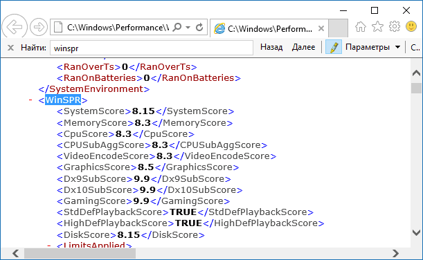

Пользователи, обновившиеся до новой ОС, особенно если обновление происходило с семерки, интересуются: а где посмотреть индекс производительности Windows embedded (тот, который в цифрах показывает оценку до 8.9 для разных подсистем компьютера). В свойствах системы и Windows PowerShell эта информация теперь отсутствует.
Тем не менее, функции подсчета индекса производительности никуда не делись, и возможность просмотреть эту информацию в Windows 10 остается, причем как вручную, без использования любых сторонних программ, так и с помощью нескольких бесплатных утилит, одна из которых (самая чистая от любого стороннего ПО) также будет продемонстрирована ниже.
Запустите командную строку от имени администратора (проще всего это сделать через правый клик по кнопке "Пуск", либо, если в контекстном меню нет командной строки, начните вводить «Командная строка» в поиске на панели задач, затем нажмите по результату правой кнопкой мыши и выберите пункт Запустить от имени администратора).
После чего введите команду:
winsat formal -restart clean
и нажмите Enter
Команда запустит оценку производительности, которая может продлиться несколько минут. По завершении проверки, закройте командную строку (оценку производительности можно запустить и в PowerShell).
Первый метод (не самый простой): зайдите в папку "C:\ Windows\Performance\WinSAT\DataStore" и откройте файл с именем "Formal.Assessment (Recent).WinSAT.xml" (в начале имени будет также указана дата). По умолчанию, файл откроется в одном из браузеров. Если этого не произойдет, можно открыть и обычным блокнотом
После открытия, найдите в файле раздел, начинающийся с имени "WinSPR" (проще всего воспользоваться поиском, нажав Ctrl + F). Все, находящееся в этом разделе и есть информация об индексе производительности системы.
